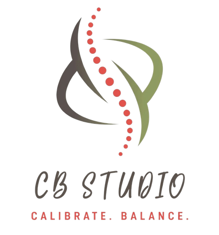

ChunBalance
鈞衡舍遊戲間
把身體結構平衡的技術做成小遊戲，
邊玩邊認識自己的身體。
身體結構
站得穩挑戰讓腳底三個點一起出力，挑戰低頭滑手機、單腳站、閉眼站，你撐得住嗎？ 足弓的一天先量一張腳圖，再跟著小人過一天，看足弓有沒有撐住，身體差多少。 結構偵探肩膀痛，問題卻在腳？看線索，找出真正的源頭。 結構調整 🔒結構調整五關模擬（學員限定，答對題目才能進入）。 身體累了嗎上傳一張站姿照，點出關節，看看身體往哪邊歪（僅供娛樂）。玩完覺得自己好像也這樣？這就是我在做的：足部張力檢測＋全身結構調整。
足弓墊資訊：帥垚 great-arch.com
想學這套身體結構技術嗎？請洽 結構X獵人 strxhunter.com
董氏奇穴
董氏客人上門落枕、閃腰、腳踝扭到，客人上門了，你會選哪一組穴？ 董氏奇穴連連看把同一組的穴位湊起來，猜猜它在身體哪裡。馬克是董氏針灸第五代傳人，調整時也會用上這套穴位的思路。
穴位資料出處：董氏心氣神針傳承網 tungs-acupuncture.com
能量平衡
今天療癒了嗎跟著呼吸點亮七個脈輪，療癒自己或幫別人補氣，新手到老手都能玩。身體很緊、腦袋停不下來的時候，調整也會搭配靈氣，幫你慢慢放鬆下來。
想學靈氣嗎？請洽 結構X獵人 strxhunter.com
輕鬆玩
溫泉蛋闖關顧水溫、敲蛋、倒調味，煮出客人要的溫泉蛋。 擠痘痘大作戰粉刺、膿包、粉瘤，擠得剛剛好最爽。 打蚊子大作戰蚊子在臉旁邊飛，打歪了就打到自己臉。純紓壓。玩久了記得起來動一動，別讓脖子跟著卡住。